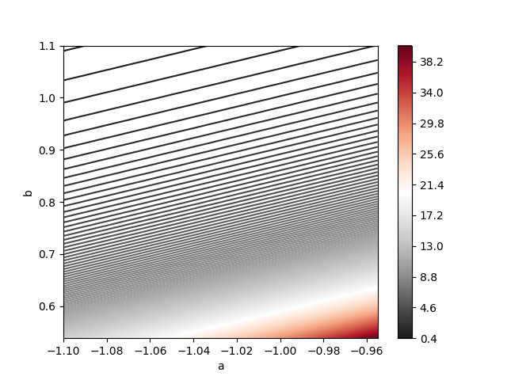

6. Reference analysis#
Sometimes, we are looking for prior distributions with little impact in the posterior distribution. Such priors are known as noninformative or reference priors, which are usually described as flat, constant or diffuse.
For example, in the case of a normal likelihood with mean \(\theta\) and known variance \(\sigma^2>0\), when we consider a normal prior with mean \(\mu_0\) and variance \(\tau_0^2\), we get
where
We can model the case where we do not posses prior information considering a normal distribution with infinite variance. That is, the case in which we do not have prior information can me model taking \(\tau_0\to\infty\). In such case, the prior distribution would be given by \(p(\theta)\propto1_{\mathbb{R}}(\theta)\), which agree with the principle of indifference.
Furthermore, when we take the limit case \(\tau\to\infty\), then the posterior distribution is given by
which coincides with the frequentist statistics.
Improper distributions
Note that the function \(1_{\mathbb{R}}(\theta)\) does not have a finite integral. Therefore, there is no normalizing constant that can turn it into a density, and it does not determine a distribution properly said. This kind of distributions whose density does not have a finite integral are known as improper distributions.
6.1. Ambiguity of the principle of indifference#
Consider the binomial likelihood, we had proposed to model the noninformative case through a uniform distribution. That is, considering \(\theta\sim\textsf{Uniform}(0,1)\). On the other hand, assume that we are actually interested in \(\phi=-\log\theta\). If \(\theta\sim\textsf{Uniform}(0,1)\), then \(\phi\sim\textsf{Exponencial}(1)\). But accordingly to to the principle of indifference, since we don’t have prior information about the value of \(\phi\), we should have model it as \(p(\phi)\propto 1_{(0,\infty)}(\phi)\). So, which prior should we take for \(\phi\)?!
This ambiguity of the principle of indifference, in which it is not clear what parameter should follow a uniform distribution can yield important contradictions. As an example, check Bertrand paradox.
6.2. Jeffreys rule#
There exists some rules that helps us to define a noninformative prior distribution for the parameters, without suffering from the inconsistency of the principle of indifference. The most popular option is Jeffreys rule. To properly define it, we first need concepts as the score function and the (expected) Fisher information.
6.2.1. Score function#
Assume that \(Y\sim p(Y|\theta_0)\), we define the score function as
Note that,
so
If the integrate and derivative operations can be interchage, then
6.2.2. (Expected) Fisher information per sample unit#
We define the expected Fisher information per sample unit as
On the other hand, note that
Then,
Evaluating in \(\theta_0\) and assuming that we can interchange the integrate and derivate operations, we get that
Regularity conditions
To assure that the integrate and derivate operations are interchangeable in the previous results, the likelihood must satisfies certain conditions known as regularity conditions. These are essentially smoothness conditions of the likelihood. We will tacitly assume that these conditions hold.
Therefore, under regularity conditions,
and
6.2.3. Exponential likelihood#
You can check the code 05_ScoreExponentialLikelihood.ipynb within the repository of the course, for an example of the previous concepts for the exponential likeklihood.
6.2.4. Jeffreys prior#
The noninformative Jefrreys prior is given by
Assume that \(\phi\) is a tansformed parameter from \(\theta\). If we use Jeffreys rule to determine the prior of \(\theta\) and then we apply the transformation theorem to calculate the distribution of \(\phi\), or if we use directly Jeffreys rule to determine the distribution of \(\phi\), we would end up with the same distribution. Thus, Jeffreys prior does not suffer from the inconsistencies of the principle of indifference, previously pointed out. Moreover, the fact that Jeffreys prior is invariant under transformations 1-1 has been interpretated as that we do not add information, it does not matter in which parametric space your working in, and thus generates a noninformative prior.
On the other hand, it also implies that not all the values of \(\theta\) have the same amount of information. Therefore, understanding the prior distribution as a way to quantify the information of each value a priori, it makes sense to consider it proportional to (some function of) Fisher information.
For example, for the binomial likelihood, it can be shown that
note that \(\theta\to 0\) or \(\theta\to 1\) correspond to the most informative cases, and \(J(\theta)\to\infty\) in those cases. On the other hand, \(J(\theta)\) is minimized when \(\theta=0.5\), which corresponds with the less informative case.
6.2.5. Proof of the invariance of Jeffreys prior (optional)#
Assume that \(p(\theta)\propto \sqrt{J(\theta)}\) and let be \(\phi=\phi(\theta)\) a 1-1 transformation of \(\theta\).
By the chain rule, we have that
and
Multiplying both side by -1 and taking the expected value with respect to \(Y\), we get
Thus
that is,
\(\blacksquare\)
6.2.6. Cramér–Rao bound (optional)#
Let be \(Y_1,\ldots,Y_n\) random variables with joint density \(p(\mathbf{Y}|\theta)\), and let be \(T(\mathbf{Y})\) any function such that \(\mathbb{E}_{\mathbf{Y}|\theta}[T(\mathbf{Y})]\) is a differentiable function of \(\theta\).
Moreover, define the score function (of the samplel) as
we proved that, under regularity conditions
Thus, under such conditions, it is satisfied that
On the other hand, by Cauchy-Schwartz inequality
If, \(Y_1,\ldots,Y_n\) are i.i.d. r.v. with density function \(p(Y|\theta)\), then
Moreover, if \(T(\mathbf{Y})\) is an unbiased estimator for \(\theta\), i.e. \(\mathbb{E}_{\mathbf{Y}|\theta}(T(\mathbf{Y}))=\theta\), then
This inequality formalizes our intuitive thinking of the inverse behavior between variance and information. Large variance implies low information, while low variance implies large information.
6.2.7. Historical relevance of Jeffrey prior#
The problem of the not-invariance under 1-1 transformations by the principle of indifference was a major critique to Bayesian statistics at the beginning of the century XX, made, among others, by Ronald A. Fisher. However, the studies and contributions done by Harold Jeffres about the noninformative priors that were invariant brought interest to the field again.
6.3. Reference analysis with pivotals#
6.3.1. Reference prior for a parameter of location#
If \(U=Y-\theta\) is a random variable whose distribution does not depend of \(\theta\) nor \(Y\), we say that \(U\) is a pivotal quantity and \(\theta\) is known as the parameter of localization \(\theta\in\mathbb{R}\).
Note that
then
and
Thus,
this implies that \(p(\theta)\propto 1_{\mathbb{R}}(\theta)\), which is the prior of reference for a location parameter.
6.3.2. Reference prior for a parameter of scale#
If \(U=\frac{Y}{\theta}\) is a random variable whose distribution does not depend of \(\theta\) nor \(Y\), we say that \(U\) is a pivotal quantity and \(\theta\) is known as the parameter of scale, \(\theta>0\).
Note that
and
then
and
Thus,
this impllies that
that is \(p(\theta)\propto \frac{1}{\theta}1_{(0,\infty)}(\theta),\) which is the prior of reference for a scale parameter.
6.4. Uniform likelihood#
Let be \(Y|a,b\sim\textsf{Uniform}(a,b)\),
Consider the following transformation
so
then
That is \(U\sim\textsf{Uniform}(0,1)\), because its distribution does not depend of \(a,b\) nor \(Y\), then \(U\) is a pivotal quantity, \(a\) is the localization parameter and \(b-a\) is the scale parameter. Thus, we can use the reference prior:
Considering the reparametrization \(\phi(a, b-a)=(a,b)\), we obtain the reference prior for the original parameters \(a\) and \(b\), given by
On the pther hand, note that the likelihood can be expressed as
and the likelihood of the sample would be
Thus, the posterior distribution satisfies
Integrating the left side of the last expression, we can get the constant of proportionality, so the posterior density is given by
You can check the code 06_UniformPivotalPrior.ipynb within the repository of the course, for an example of Bayesian inference for the Uniform distribution with \(a=-1\) and \(b=1\).
The next figure correspond to the joint posterior \(p(a,b|\mathbf{Y})\). Note that it is not well-approximated by a normal distribution. This is because the uniform likelihood does not satisfy the regularity conditions, which include that the likelihood should not be maximized in border of the parametric space.
6.5. Exercises#
Let be \(Y|\theta\sim\textsf{Poisson}(\theta)\). Prove that the expected Fisher information per sample unit is given by
Let be \(Y|\theta\sim\textsf{Binomial}(n,\theta)\). Prove that the expected Fisher information per sample unit is given by
If \(\theta\) is a scale parameter and \(p(\theta)\propto \frac{1}{\theta}1_{(0,\infty)}(\theta)\), prove that
and